| 日付 | 2008年1月26日（土） |
|---|---|
| 山域 | 奥武蔵 |
| メンバー | 単独 |
| 山行形態 | 日帰り |
| アクセス | 電車、バス |
| ルート (Map) | 経塚→大霧山→皇鈴山→登谷山→釜伏山→波久礼駅 |
久々に奥武蔵の山に行ってみる。
大霧山だけでは短すぎるので、ずっと北まで縦走してみることにする。
9:22 経塚バス停到着。標高320m。
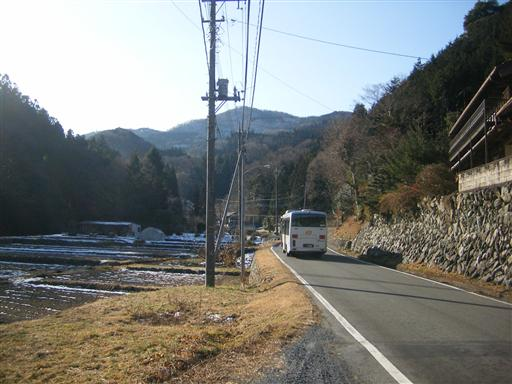
明るい斜面を登っていく。
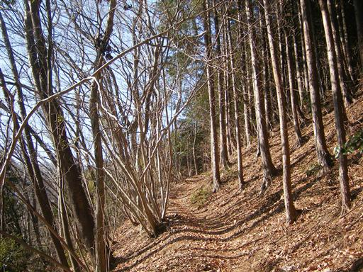
旧定峰峠に到着。ひっそりとした峠には祠が祀られている。
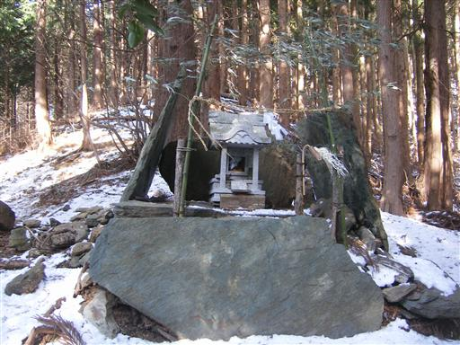
尾根道に出ると雪が積もっている。
人気の山なので足跡は多い。
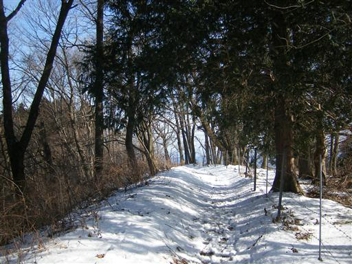
この山は山腹が牧場になっていて、草原が広がっている。
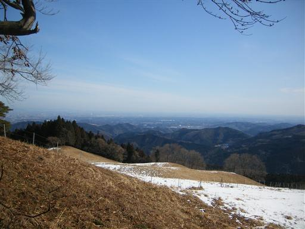
10:46 大霧山山頂到着。標高767m。
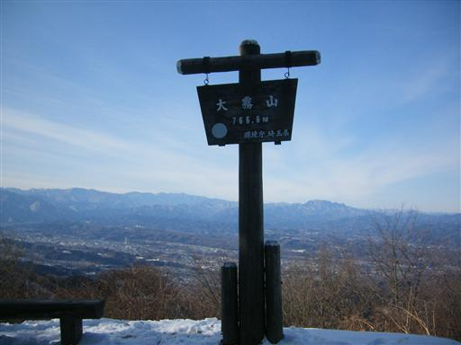
山頂からは大展望が得られる。真中の白い山は浅間山。
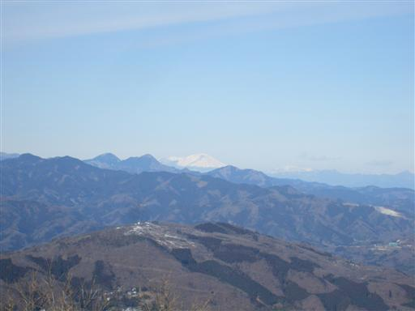
北にはこれから縦走する丸い尾根が延々と続いている。
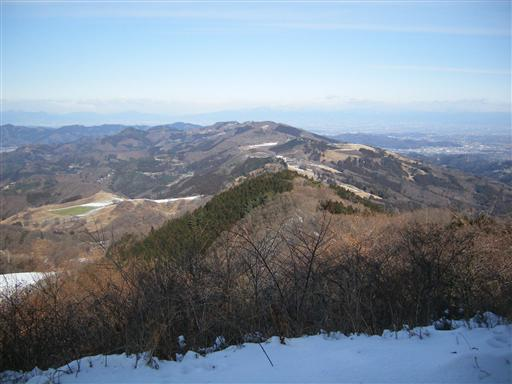
尾根を北上すると車道に出る。
奥武蔵の山々は車道が多いのが欠点。
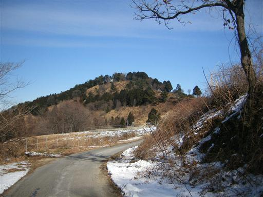
そりで滑って遊ぶ子供。
車で上まで来て遊んでいる家族連れもちらほらいる。
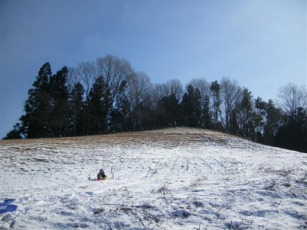
左手にはギザギザの稜線を持った特徴的な山容の両神山が聳えている。
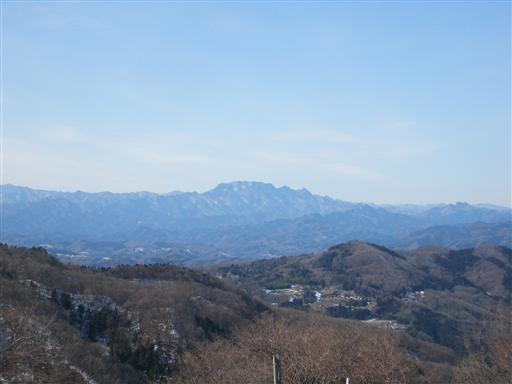
この辺りには県営の大きな牧場が広がっている。
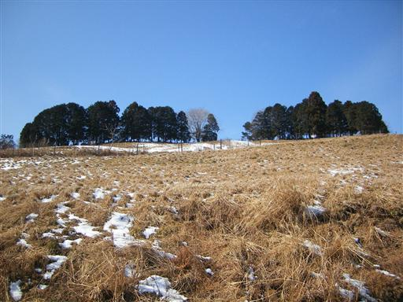
牛の横断あり…
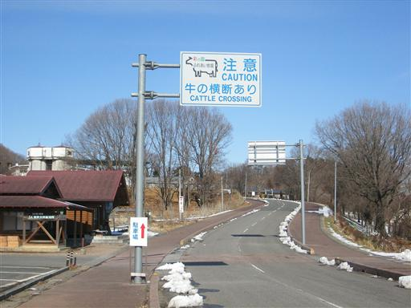
遠くの方に牛を発見。
観光施設はすべて閉じられているが、冬でも牛はいるみたいだ。
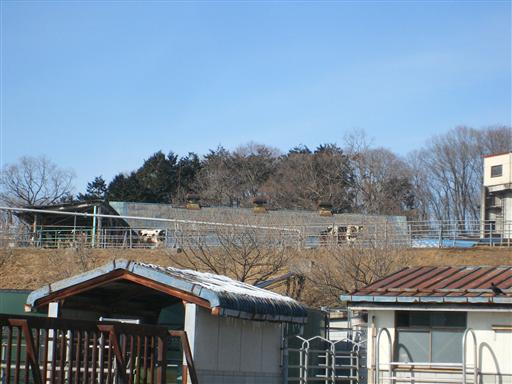
羊もいる。黙々と草を食べている。
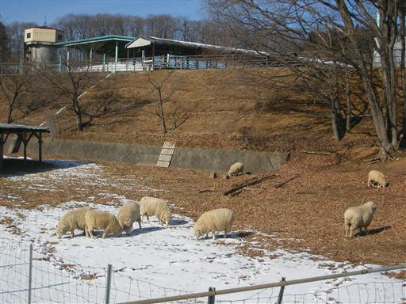
二本木峠に到着。
車道が逸れ、ここからようやく登山道が始まる。
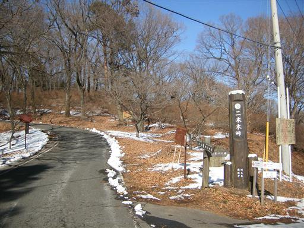
峠からいくつかの瘤を越え、皇鈴山に到着。
広くて非常に静かな山頂。
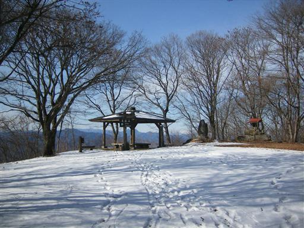
皇鈴山からすぐ北隣の登谷山を目指し、展望のよい尾根を歩いていく。
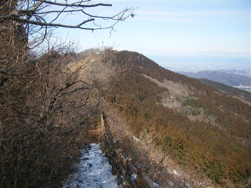
13:10 登谷山山頂到着。標高668m。
素晴らしい展望の山だが、山頂標識などは特にない。
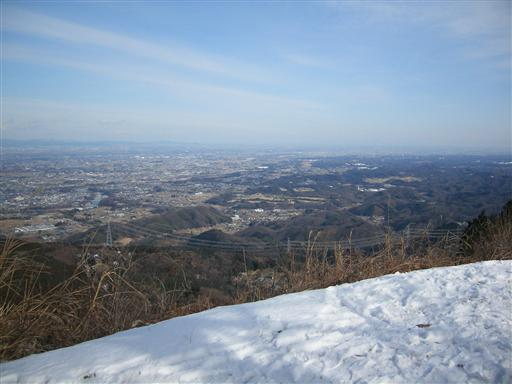
登谷山からは再び車道になる。
車道を北上し釜山神社に到着。
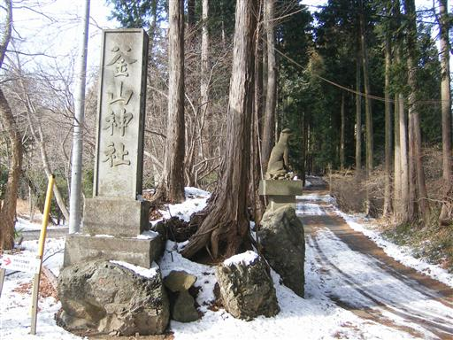
神社入口で狼の狛犬が社前を守っている。
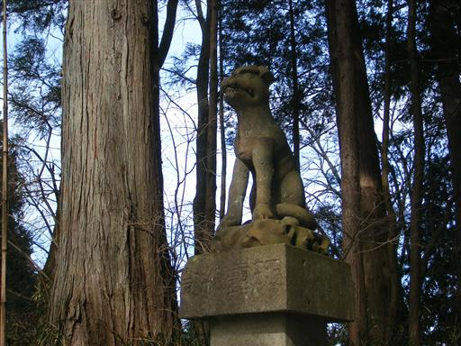
釜山神社。ここも神主さん以外は誰もおらずひっそりとしている。
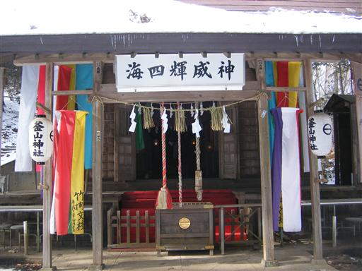
釜山神社の裏から釜伏山に登る。
この山は今までの山と違い岩がちな地形で、急激に盛り上がっている。
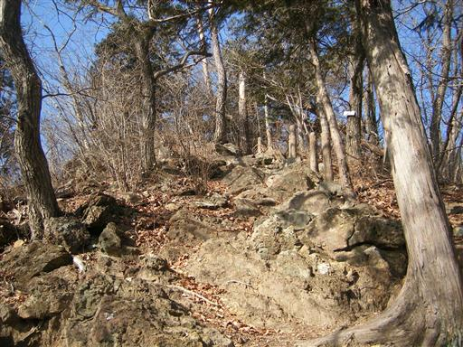
釜伏山山頂到着。本日最後のピーク。
樹林に囲まれたこの山も例に漏れずひっそりとしている。
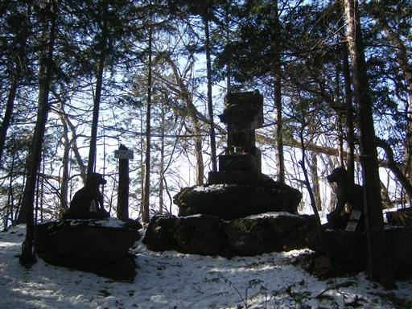
この山は全山蛇紋岩でできているらしい。
蛇紋岩といっても至仏山のそれとはずいぶん見た目が違う。
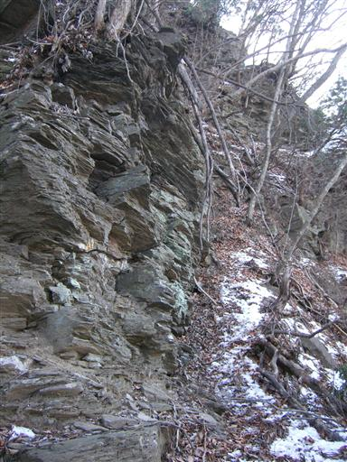
下山。ここから長い長い車道が続く。
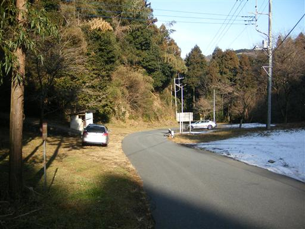
ミカンの木が並ぶ。この辺りはミカン栽培の北限地として観光地化されているが、
実際にはもっと北の方でも栽培されているようだ。
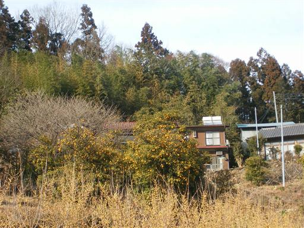
車道脇に神社を発見。何の変哲も無い神社だが、
都会ではなかなかこういう素朴な神社は見つけられない。
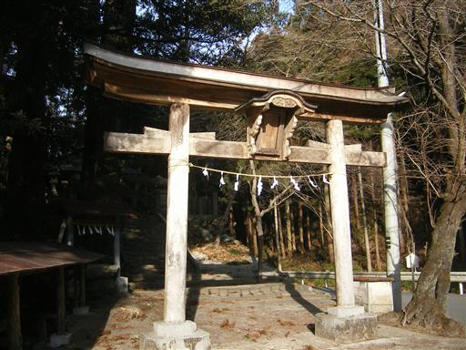
この神社にはなぜか蛙の像が…
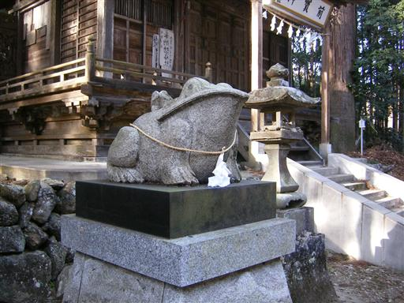
しばらく歩くと遊歩道が現れる。
車道から数メートルしか離れていないが、車道歩きよりははるかにまし。
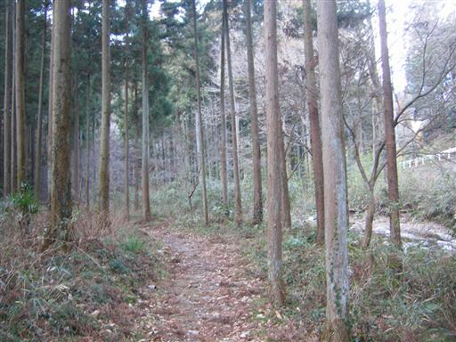
夫婦橋。ただ単に橋が二つ並んでるだけ…
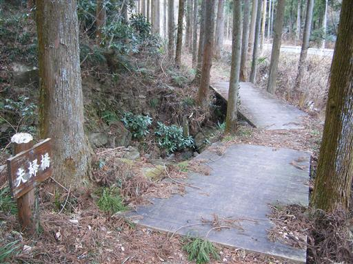
東京湾に注ぐ大河、荒川を渡る。駅までもうすぐ。
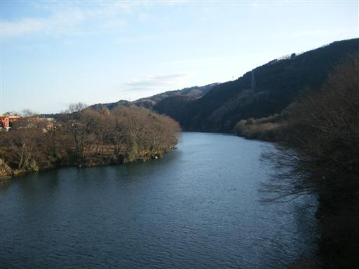
15:40 波久礼駅到着。標高115m。
登山道と車道が混ざる長い長い縦走路だった。
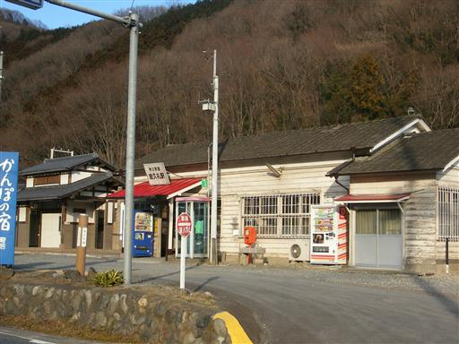